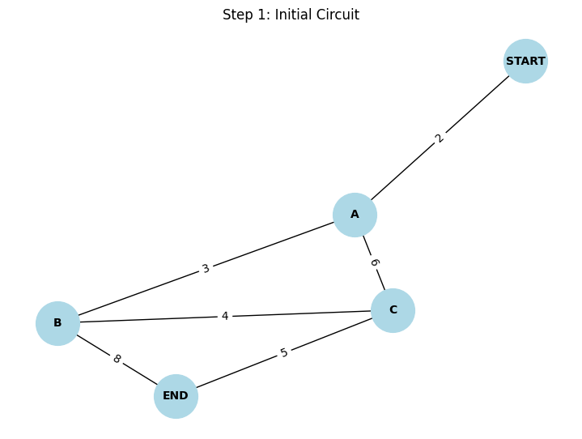

Problem 1
⚡ Circuits Problem 1
Equivalent Resistance Using Graph Theory
✅ 1. Motivation
Calculating equivalent resistance is a key task in circuit analysis. Traditionally, this involves applying series and parallel rules, but for complex resistor networks, these manual methods become inefficient and error-prone.
Graph theory provides a powerful alternative. By modeling the circuit as a weighted graph:
- Nodes represent junctions,
- Edges represent resistors (weights = resistance),
- The task becomes a problem of graph simplification.
This method allows for algorithmic, repeatable, and programmable solutions — which are especially useful in circuit simulation software.
✅ 2. Problem Setup
We consider a circuit modeled as a graph with:
- Nodes representing junctions,
- Edges representing resistors (with resistance values as weights),
- One START node and one END node.
The goal is to find the equivalent resistance between START and END by simplifying the graph using algorithmic steps based on electrical principles.
✅ 3. Theoretical Concepts
🔹 Ohm’s Law
🔹 Series Resistance
If resistors \(R_1\) and \(R_2\) are in series:
🔹 Parallel Resistance
If resistors \(R_1\) and \(R_2\) are in parallel:
✅ 4. Graph-Based Strategy
We represent the circuit as a graph: - Vertices = junctions - Edges = resistors with weights - Start and end nodes are marked
The simplification proceeds by: - Identifying nodes with degree = 2 (series), - Identifying multiple edges between the same nodes (parallel), - Iteratively applying reduction rules until a single edge remains.
✅ 5. Algorithm Overview
Step-by-step simplification algorithm:
- Find nodes with degree 2 (excluding START and END).
- Apply series rule to combine two adjacent resistors.
- Find multiple edges between two nodes.
- Apply parallel rule to combine them.
- Repeat steps until only one edge connects START to END.
✅ 6. Example: Complex Circuit
🔹 Step-by-Step Simplification
✅ Step 1: Initial Circuit
- START–A: 2 Ω
- A–B: 3 Ω
- A–C: 6 Ω
- B–C: 4 Ω
- C–END: 5 Ω
- B–END: 8 Ω

✅ Step 2: Combine B–C–END and B–END in Parallel
- B–C = 4 Ω, C–END = 5 Ω → total series: 4 + 5 = 9 Ω
- B–END = 8 Ω
Combine in parallel:

✅ Step 3: Combine A–B–END as Series
- A–B = 3 Ω
- B–END (parallel result) = 4.24 Ω
Combined:
- A–C = 6 Ω
- C–END = 5 Ω → A–C–END = 11 Ω

✅ Step 4: Final Parallel Between A–B–END and A–C–END
Parallel of 7.24 Ω and 11 Ω:

✅ Final Equivalent Resistance from START
✅ Summary
- The final equivalent resistance of the circuit is 6.37 Ω
- Graph theory allows us to visualize and simplify even complex electrical circuits
- This method can be extended to automated analysis in circuit simulation tools
Colablink
✅ 7. Analysis and Efficiency
- Graph reduction steps are efficient and can be automated.
- Works for any nested configuration of resistors.
- Algorithm scales well for larger, complex networks.
- Complexity: approximately
with efficient detection of patterns.
✅ 8. Conclusion
This graph-based method of simplifying resistor networks:
- Provides a structured and scalable solution,
- Can be implemented in code for use in circuit simulators,
- Highlights the deep connection between physics and graph theory.
It is especially valuable in modern contexts such as: - PCB design tools, - Educational simulators, - Automated testing and optimization.
📌 This approach can be extended to capacitors, AC impedance networks, or even mesh current/loop analysis for complex AC circuits.